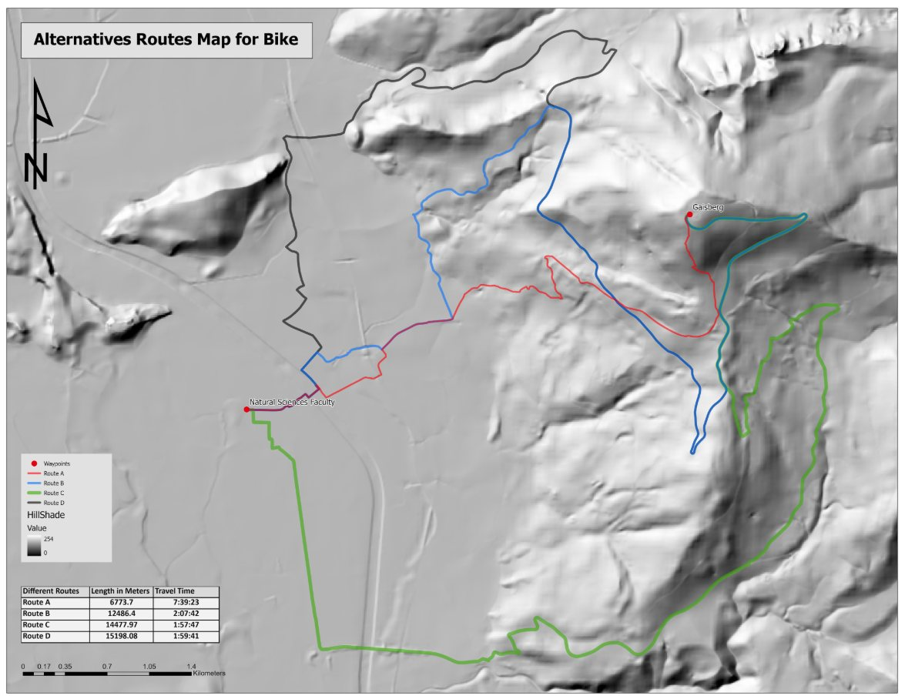

Network Analysis & RoutingFig. 1 Alternative bike routes compared on a hillshade base
Bike Route Network Analysis
Used ArcGIS Pro and OpenStreetMap to calculate alternative routes for a bike tour where existing routing services fall short.
- Location
- Gaisberg, Salzburg, Austria
- Year
- 2024
- Client
- Upwork client (geomatics firm)
- Tools
- ArcGIS Pro, Network Analyst, OpenStreetMap


Challenge
Existing bike-routing services gave poor routes in mountainous terrain. The client wanted alternatives tested against a real ride.
Approach
- Built a network dataset from OpenStreetMap in ArcGIS Pro
- Solved alternative routes between the same start and end points
- Compared each route's length and travel time with the test-ride reference
- Wrote up conclusions for improving bike routing
Results
- Route A is the shortest at 6.8 km but the slowest, at 7 h 39 min, because it climbs the steepest ground
- Route B: 12.5 km in 2 h 08 min; Route C: 14.5 km in 1 h 58 min; Route D: 15.2 km in 2 h 00 min
- Longer routes on gentler gradients were up to about four times faster than the shortest path
- This shows why distance-based routing fails in steep terrain and slope has to be in the cost